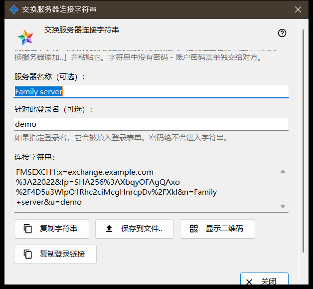
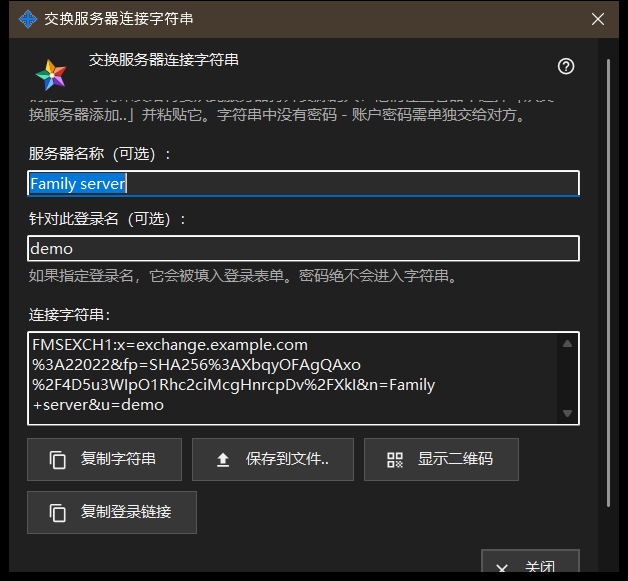

交换服务器连接字符串
用途说明
此窗口生成连接字符串，其他设备凭它找到这台交换服务器并核对其证书。可在交换服务器设置中点击「连接字符串和二维码..」打开，也可在服务器首次运行的欢迎窗口中打开。该窗口不会更改任何设置。


操作顺序
- 确认服务器已有证书，并且已设置客户端使用的地址。
- 打开窗口：字符串立即出现。
- 如有需要，输入服务器名称和登录名；停止输入片刻后，字符串会重新生成。
- 复制字符串、将其保存到文件、显示它的二维码，或复制登录链接。
- 把结果交给对方，并把账户密码另行告知。
- 点击「关闭」。
界面元素
按钮何时可用
「连接字符串和二维码..」仅在服务器已有证书且已设置客户端使用的地址时可用。地址为空时按钮保持禁用，其下方的提示写着：「请先设置客户端使用的地址：没有它就无法生成连接字符串。」窗口内部，在没有字符串时按钮保持禁用。
服务器名称和登录名
「服务器名称（可选）：」最多接受 64 个字符，作为服务器名称存入字符串。「针对此登录名（可选）：」接受 3 到 64 个字符（a-z、0-9、点、下划线、连字符），并会填入使用该字符串的设备的登录表单。密码绝不会进入字符串。
连接字符串
只读框「连接字符串：」显示结果：客户端使用的地址、证书指纹，以及可选的名称和登录名。收到字符串的设备信任其中的指纹，因此无需任何人手动比对。
复制与保存
「复制字符串」会把字符串作为普通文本放入剪贴板，因为它并非机密，下方一行会显示「字符串已复制。」「保存到文件..」会写入一个 .fmsexch 文本文件（建议名称 exchange-server.fmsexch）并显示其路径；另一台设备在其交换账户窗口中用「打开文件..」读取它。如果剪贴板正忙或文件无法写入，会有一行文字说明。
二维码和登录链接
「显示二维码」会打开同一字符串的图片供扫描；它只指明一个服务器，不授予对任何内容的访问权限。「复制登录链接」仅在此服务器提供 Web 客户端时出现；它会复制一个携带同一字符串的浏览器链接。
无法生成字符串时
警告色的一行会指出原因：名称或登录名超出限制；服务器没有证书（请先启动一次服务器）；或交换服务器没有响应。排除原因后，字符串会重新生成。「关闭」会结束窗口；名称和登录名不会被保存。